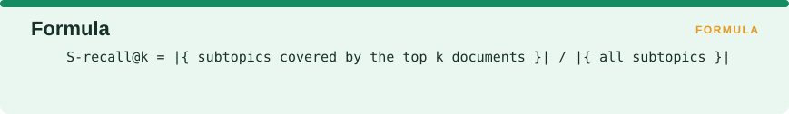
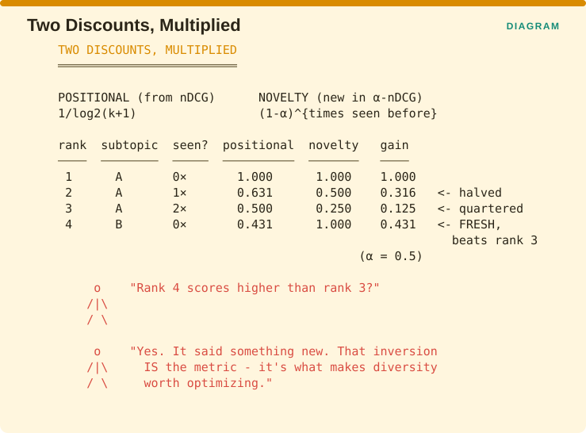
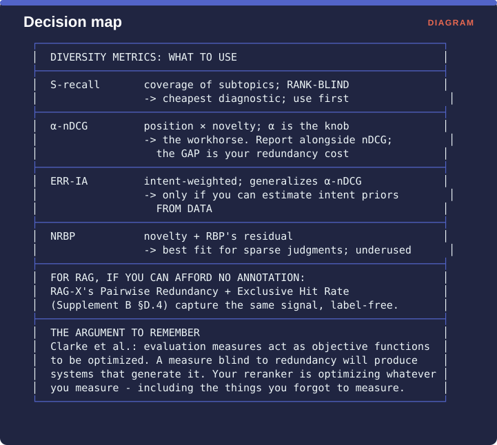

Measuring Retrieval › Chapter 8 - Diversity and Novelty
Chapter 8 - Diversity and Novelty
8.0 The assumption that breaks
Every metric so far treats documents as independently relevant, which means the relevance of the document at rank 3 does not depend in any way on what the documents at ranks 1 and 2 already said. That assumption is false, and it is false in two distinct ways that the literature is careful to keep apart.

The first problem lives on the query side and is called ambiguity. Somebody types “jaguar” and could mean the animal, the car, or the operating system version, so a system that serves only the car has failed two thirds of the people who typed that word.
The second problem lives on the document side and is called redundancy. Five documents come back all saying the same thing about the same subtopic, so four of the five slots did no work.
Both get called diversity problems, and they need different metrics, because ambiguity is about coverage of the possible intents while redundancy is about the marginal value each additional document adds.
The framing that brought them together comes from Clarke et al., whose stated motivation was that ambiguity in queries and redundancy in retrieved documents are both poorly reflected by existing evaluation measures, and who then built a framework that systematically rewards novelty and diversity.
8.0.1 Why this chapter matters more for RAG than for search
In classical search, a redundant document costs the user a slot they can skip in half a second. In RAG, a redundant chunk costs you context budget that you paid for and cannot reuse, because the space that chunk occupies in the prompt is gone whether or not it contributed anything.
RAG-X measured this directly, finding 22.0% pairwise redundancy between top contexts and an Exclusive Hit Rate at rank 2 of only 6.8%, which Supplement B §D.4 covers in detail. Their prescribed remedy, which is Maximum Marginal Relevance for diversity together with diverse reranking, is the algorithmic counterpart of what this chapter measures.
If you work on RAG and have been skipping diversity metrics as an academic nicety, this is the chapter that should change your mind.
8.1 Subtopic Recall (S-recall)
One-line: What fraction of a query’s distinct subtopics is covered by the top k results?
Formula:

Facets: Correctness | query | ref | R | ESTABLISHED VERIFIED Source: Zhai, Cohen & Lafferty, Beyond Independent Relevance: Methods and Evaluation Metrics for Subtopic Retrieval, SIGIR 2003, pp. 10-17
The problem it solves
When a query has several possible meanings, a ranking metric that assumes a single intent will happily give top marks to a system that serves one meaning perfectly and ignores the rest. You need a way to ask whether the result list acknowledged that the question had more than one reading.
The idea
Somebody annotates each query with the subtopics it can be read as covering. S-recall@k is then the number of distinct subtopics covered by the top k documents, divided by the total number of subtopics that exist for that query. It is a coverage question rather than a relevance question.
The founding paper’s title says exactly what the move was, which was to go beyond independent relevance. The same paper proposed a companion measure sometimes written S-RR, which is the reciprocal of the rank at which complete coverage of all aspects is finally achieved.

The figure runs the jaguar query with three subtopics, being the animal, the car and the operating system. System A is relevance-optimal and returns a car review, car pricing and car dealers, which scores nDCG 0.95 and S-recall@3 of 1/3 = 0.33. System B returns a car review, an article on jaguar habitat and a page about Mac OS 10.2, which scores nDCG 0.78 and S-recall@3 of 3/3 = 1.00.
System A has the better nDCG and failed two thirds of the people who typed that word. nDCG cannot see the failure, because it averages over a single assumed intent.
Advantages
- Conceptually simple and easy to explain to anyone, since the question is just whether you covered all the meanings.
- Directly measures the ambiguity failure that relevance metrics are blind to.
- Cheap to compute once the subtopics have been annotated.
- Extends the Chapter 5 metrics with a coverage dimension rather than replacing them.
Disadvantages
- Requires subtopic annotation, which is expensive and subjective. Somebody has to decide that “jaguar” has three intents rather than seven, and that decision moves the number.
- Ignores rank entirely. Covering all the subtopics at ranks 1 to 3 scores identically to covering them at ranks 98 to 100, which is what α-nDCG exists to fix.
- Ignores relevance grade. A barely relevant document that touches a subtopic counts as fully as an excellent one.
- Binary coverage. There is no way to express that a document partly covered a subtopic.
Domain examples
Ambiguous consumer search. Its home. Short queries with several possible readings are the normal case in web and e-commerce search.
RAG over heterogeneous corpora. Underused and genuinely valuable. If a user asks what the refund policy is and your collection contains regional variants, S-recall over regions tells you whether the system retrieved one region’s policy while presenting it as the answer, or acknowledged that several exist.
Multi-hop RAG. CAUTION Be careful here, because this is a different problem that looks similar. Multi-hop questions need several passages that jointly support one answer, whereas diversity needs passages covering distinct answers. S-recall measures the second, so conflating them will lead you to optimize for spread when what you needed was conjunction. SURE-RAG’s set-sufficiency framing in Supplement B §C.9 is the multi-hop tool.
Recommendation
Use S-recall as a cheap first diagnostic when you suspect your queries carry intent ambiguity. It is the easiest metric in this chapter to instrument, and it will tell you whether you have a problem worth spending α-nDCG’s annotation budget on.
Do not use it as an optimization target, because its rank-blindness means a system can satisfy it by burying the diverse results deep where nobody sees them.
8.2 α-nDCG
One-line: nDCG where a document’s gain is discounted by how many previously-seen documents already covered the same subtopic.
Formula (sketch):

Facets: Correctness | query | ref | R | ESTABLISHED VERIFIED Source: Clarke, Kolla, Cormack, Vechtomova, Ashkan, Büttcher & MacKinnon, Novelty and Diversity in Information Retrieval Evaluation, SIGIR 2008, pp. 659-666, doi 10.1145/1390334.1390446
The problem it solves
S-recall knows about coverage and nothing about position, while nDCG knows about position and nothing about coverage. What you want is one number that rewards putting relevant documents early and also stops rewarding the fourth document that repeats what the first three said.
The idea
α-nDCG keeps Chapter 5’s positional discount and multiplies it by a second, independent discount for redundancy. For each subtopic, you track how many times it has already been covered by the documents above the current rank, and a document’s gain is reduced by (1 - α) raised to that count. A document covering a completely fresh subtopic keeps its full gain, while the fifth document covering a subtopic already seen four times keeps (1 - α) to the fourth power of it.
The parameter α is the novelty penalty and it runs from 0 to 1. At α = 0 the whole thing reduces to ordinary nDCG with no reward for novelty at all, and at α = 0.5 each repeat is worth half of the one before it.

The figure works four ranks with α = 0.5. Rank 1 covers subtopic A, which has been seen zero times, so its positional weight of 1.000 is multiplied by a novelty weight of 1.000, giving a gain of 1.000. Rank 2 covers subtopic A again, so its positional weight of 0.631 is multiplied by a novelty weight of 0.500, giving 0.316, which is half what it would otherwise have earned. Rank 3 covers A a third time, so 0.500 multiplied by 0.250 gives 0.125. Rank 4 covers a fresh subtopic B, so its positional weight of 0.431 is multiplied by a full novelty weight of 1.000, giving 0.431.
Rank 4 therefore scores higher than rank 3, despite sitting lower in the list, because it said something new. That inversion is the metric, and it is what makes diversity worth optimizing for.
The authors’ argument for why this matters is worth carrying forward, because it recurs throughout this book. Evaluation measures act as objective functions that retrieval systems get optimized against, so a measure that ignores redundancy will reliably produce systems that generate redundancy. That argument applies with full force to RAG rerankers.
Advantages
- The canonical diversity metric, widely implemented and understood, and used in the TREC Web track diversity tasks.
- Combines relevance, position and novelty in a single number without discarding any of the three.
- α is an explicit, auditable knob that states how hard you punish redundancy.
- Backwards compatible, since at α = 0 it is exactly nDCG, which makes adoption incremental rather than a cutover.
Disadvantages
- Requires nugget-level or subtopic-level judgments, which is considerably more annotation than binary or graded relevance, because each document has to be labelled with which subtopics it covers rather than simply how relevant it is.
- The ideal ranking is expensive to compute and is NP-hard in general, so implementations use greedy approximations, which means two toolkits can both report “α-nDCG” and disagree.
- α must be reported, which is the same discipline RBP’s p and RBO’s p require.
- Assumes subtopics are independent and equally important, and ERR-IA in §8.3 relaxes the second of those.
Domain examples
Web search over ambiguous queries. The design target.
News and media recommendation. Redundancy is the dominant failure here, with ten outlets covering one story, so α-nDCG is the right measure and it is rarely used.
RAG context assembly. CAUTION This is the strongest under-exploited fit in the book. Your chunks carry overlapping content, your context budget is finite, and RAG-X measured 22% redundancy in a production-grade pipeline. α-nDCG computed over chunk-level subtopics is a principled measure of context efficiency, the method already exists, and the annotation cost is the only thing standing in the way.
Recommendation
If you have nugget-level annotations or can afford to build them, α-nDCG at α = 0.5 reported alongside plain nDCG is the most informative diversity pair available. The gap between the two numbers is your redundancy cost, expressed in the same units as your primary quality metric, which makes it directly arguable in a planning meeting.
For RAG specifically, the cheap approximation is RAG-X’s Pairwise Redundancy, which needs no annotation at all and captures the same signal at lower fidelity.
8.3 ERR-IA and the intent-aware family
One-line: ERR computed per intent, then averaged with intent probabilities as weights.
Formula (sketch):

Facets: Correctness | query | ref | R | ESTABLISHED VERIFIED Source: Chapelle, Ji, Liao, Velipasaoglu, Lai & Wu, Intent-Based Diversification of Web Search Results: Metrics and Algorithms, Information Retrieval 14(6):572-592, 2011
The problem it solves
S-recall and α-nDCG both treat every subtopic as equally important, so a system that covers a meaning nobody searches for is credited exactly as much as one that covers the meaning eighty percent of your users wanted. If you know how your traffic splits across intents, throwing that knowledge away makes the metric less accurate than it needs to be.
The idea, and its relationship to α-nDCG
The intent-aware construction, marked by the “-IA” suffix, is general. Take any metric, compute it once per intent while treating only the documents relevant to that intent as relevant, and then average the results weighted by how likely each intent is. That gives you DCG-IA, MAP-IA and ERR-IA.
Two things make ERR-IA in particular worth knowing. The intent probabilities are explicit weights, so if 80% of the people searching “jaguar” want the car, that intent enters the average with a weight of 0.8. And ERR-IA is a generalization of α-nDCG, which the authors show directly while arguing that it is the preferred metric among the proposals including DCG-IA and MAP-IA. It was used to evaluate the diversity task in the TREC 2010 Web track.

The figure sets the two views side by side for a jaguar query where the car intent has probability 0.80, the animal 0.15 and the operating system 0.05. α-nDCG treats all three as equal. ERR-IA weights them by demand.
So a system serving only the car intent scores 0.80 under ERR-IA and 0.33 under S-recall, and ERR-IA is the right answer if your traffic really is 80% car searchers. Everything therefore depends on whether that 0.80 came from data or from somebody’s intuition.
Advantages
- Intent probabilities make the metric match your actual traffic, which makes it the most realistic diversity measure available.
- Generalizes α-nDCG, so it is strictly more expressive.
- Inherits ERR’s cascade model, including its correct handling of redundancy.
- The -IA construction is reusable for any base metric you already trust.
Disadvantages
- Requires intent probabilities, which are hard to estimate and frequently just guessed, and a wrong distribution over intents produces a confidently wrong metric.
- Requires per-intent relevance judgments, which is the most expensive annotation anywhere in this chapter.
- Inherits ERR’s stop-when-satisfied assumption, which §5.4 established is inverted for language model consumers.
- Complex both to implement and to explain.
Domain examples
Large-scale web search. ERR-IA’s home, and the one setting where intent probabilities can be estimated reliably from query logs.
E-commerce with mixed intent. A query like “apple” spans a fruit, a phone and a record label, and query logs give you the priors directly.
Enterprise or RAG search. Usually impractical, because you lack the traffic volume to estimate intent priors and per-intent judgments are prohibitively expensive. Use α-nDCG or S-recall instead.
Recommendation
Use ERR-IA only when you can estimate intent probabilities from data. A guessed prior makes ERR-IA worse than α-nDCG rather than better, because it adds a layer of false precision on top of exactly the same underlying judgments.
8.3.1 NRBP - the diversity metric with a residual
This one is worth flagging because it connects two chapters. NRBP, meaning Novelty- and Rank-Biased Precision, adapts RBP for search result diversification, and comes from Clarke, Kolla & Vechtomova, An Effectiveness Measure for Ambiguous and Underspecified Queries, ICTIR 2009 VERIFIED.
If you adopted RBP for its residual in §5.5 and you also care about diversity, NRBP is the natural combination, since it brings geometric persistence weighting, novelty discounting and honest reporting of uncertainty together in one measure. It is the least-used metric in this chapter and arguably the best suited to the sparse-judgment settings most people actually work in.
For meta-evaluation across this whole family, see Clarke, Craswell, Soboroff & Ashkan, A Comparative Analysis of Cascade Measures for Novelty and Diversity, WSDM 2011, pp. 75-84 VERIFIED.
8.4 Chapter 8 summary

S-recall measures coverage of subtopics and is rank-blind, which makes it the cheapest diagnostic and the one to run first. α-nDCG multiplies position by novelty with α as the knob, which makes it the workhorse, and you should report it alongside plain nDCG so that the gap between them shows your redundancy cost. ERR-IA is intent-weighted and generalizes α-nDCG, and you should only reach for it when you can estimate intent priors from data. NRBP combines novelty with RBP’s residual, which makes it the best fit for sparse judgments and the most underused metric here.
For RAG, if you cannot afford any annotation at all, RAG-X’s Pairwise Redundancy and Exclusive Hit Rate from Supplement B §D.4 capture the same signal without labels.
The argument to carry out of this chapter is Clarke et al.’s. Evaluation measures act as objective functions that systems get optimized against, so a measure blind to redundancy will produce systems that generate it. Your reranker is optimizing whatever you measure, including the things you forgot to measure.
Measuring Retrieval · Madhava Gaikwad · First edition, September 2026